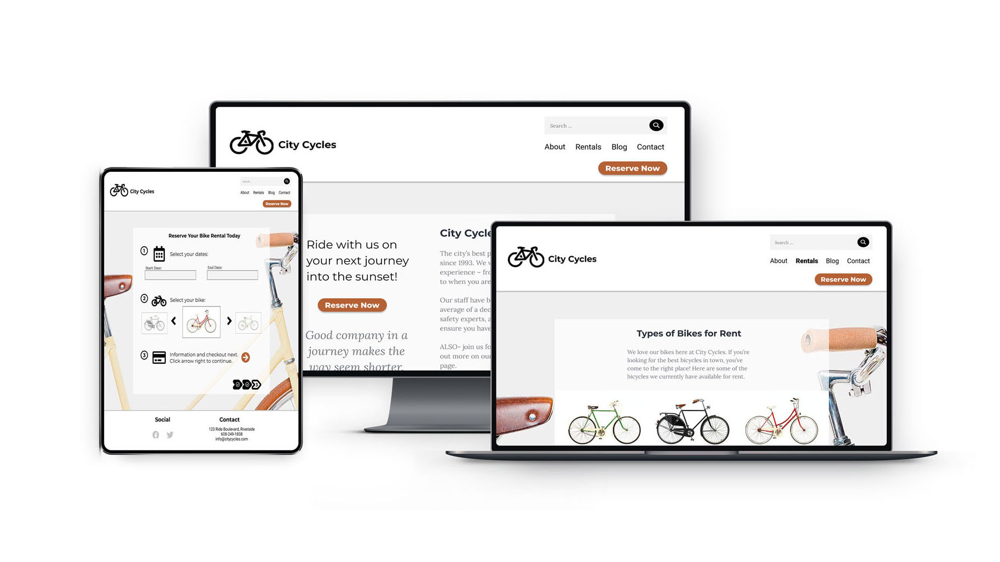
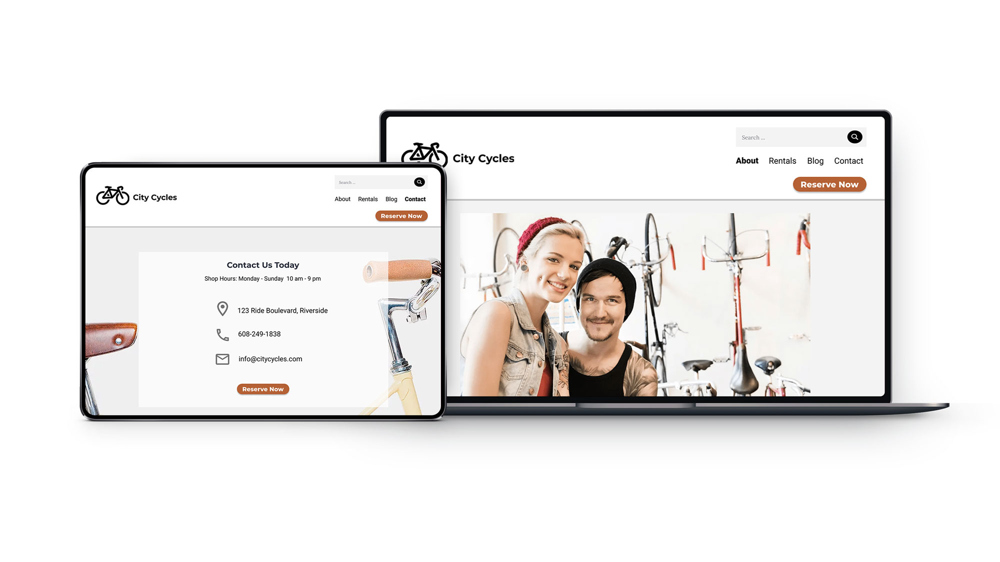

Accelerate | Customized WordPress Marketing Website

Overview
This project utilized the WordPress Content Management System and WP Professional Best Practices to create a website to meet the business needs for a marketing company that had outgrown its existing basic site. After importing the client’s database and files, a common software development methodology called Agile Development was used, working in sprints with the robust CMS to develop the features, maintaining cohesive design and then launching the changes without altering any original files.
My Role
Alongside using Agile Methodology, the work entailed experience editing and updating existing websites and dynamic web applications. After obtaining an exact copy of the client’s live site, I created a copy on my local server to edit. Edits included creation of a Child Theme, Advanced Theme Customizations, Professional Deployment & Workflow, and using MySQL database management system, the Command Line and Git version control, delivering on requests to add specific features and functionality.
The Problem
The Accelerate Marketing agency had a site created, but it was much too simple to meet their business needs, as it only consisted of a basic homepage and a blog. The chief marketing officer wanted a more dynamic website with key features, including a services section, social marketing integrations, a new look, and other additional functionality. The edits requested were to be made without editing any of the existing files.

Old homepage featured image
New homepage updated image
The Solution
Child Theme creation. In order to edit the files and make changes without actually altering any of the original files, I created a child theme to make my modifications. The child theme inherited styles and functionality from the company’s original parent theme, and only needed to include the files found in the parent theme to be altered or additional templates to be added. This method allowed me to customize the existing theme without directly editing its files and also sped up the development process, opposed to starting something from scratch.
Tools Utilized
Custom Post Types
Advanced Custom Fields
Custom Archive Templates
Forms, Menus, Plugins
Workflow
Agile Development
Git Version Control
Continuous Deployment
Local Server to Staging


Completed homepage design
Mission Statement
“Building relationships from the ground up and maintaining them, as well as the satisfaction and happiness of our customer base by delivering exceptional service with attention to quality and promptness is our main strategy. ”
Information Architecture
Foundation of UX
IA is the structural plan for building a user-friendly experience, organizing, labeling, and arranging site content. The method explores and guides site structures like the sitemap, navigation and labeling of the site, providing a foundation for the user experience, and is actually designed for both human users and computer search engines. I chose the classic hierarchical IA model as the boilerplate to build an improved site structure. The IA model defines the relationship between other parts of the site and informs the sitemap, starting with the homepage, then the main pages, ranked by importance and organized based on the user’s needs.
Hierarchical IA Model I made in Figma
City Cycles' current site structure
Documenting the current site content of the website gave a clear visualization of of its structure, with the goal here to show all the information on the site, how it’s organized, and how the information is presented to users. Reviewing City Cycles sitemap and their content structure revealed some of the issues inherent within it that may be causing confusion for the users.
Content Strategy
Exploring the information architecture involves helping the user understand their surroundings, find what they’re looking for, and accomplish what they intend to do. Part of this involves organizing things in intuitive ways using the process of content strategy, and creation of visual designs and prototyping solutions. UX theory, research and data determine which pages to include for the navigation, which provides the wayfinding clues for users to get around on the site.
Wireframe Versions and Content Layout Sketches
Inclusive Design
Improving usability is making a quality design that is intuitive and easy for users to learn and use. Accessibility is being mindful of users with limitations or disabilities. For example, ensuring there is enough visual contrast for colorblind users. Universal design philosophy and practice takes all users into consideration from the start, including users with different levels of ability.
Clear labels help human users, screen readers, and search engines, while a clean, readable font with adequate contrast against the background and careful imagery contribute to inclusive design. After implementing universal design features, trunk testing can be performed as a strategy for determining how easy it is to use and to navigate.
Sitemap and Content Organization
Implementing the hierarchical IA model and a redesigned primary navigation would make the site user-focused, offering features like easier access to booking, a more efficient reservation process, and a more user friendly site navigation. Sitemaps show the site scope and number of pages, how the navigation links to pages and how they link to each other, and the order in which people see content. An improved nav would have a more prominent booking link that the user didn’t have to search for, and would better organize, clarify, and prioritize site content users are seeking.
I performed a card sorting exercise to discover how to best organize the content on the site in ways that are intuitive to the end user. This is where I put myself in the user’s shoes, took all the content topics City Cycles wanted to include on their website, and sorted them into main page categories in a way that made sense. There were some content topics that I placed onto the blog posts page, but I included the primary and secondary topics in the new sitemap version. I placed the social links and some basic contact information into the footer, and I relocated the reservation button to a prominent static location within the header so that it is accessible from any page on the site. Also, the City Cycles logo will link back to the home page from any of the site pages.
New and Improved Sitemap
User Flow
In the planning phase of the site design, user flows help to better grasp the options to provide the users with and to assist in delivering a product that meets their needs. They help anticipate what steps users will take so that potential problems can be caught before designing begins. The user flow is a flowchart-style visual outline of what the users see, do, and experience during a specific process while using the site, and they focus on a specific task at hand. They show the screens a user could see from one point to the next, and map out how they might get there, and the possible detours using flow chart-like elements.

Updated User Flow
Walking through the user flow of the existing City Cycles website, it quickly became clear there was room for improvement. Review of user interaction data confirmed this. I created a new user flow, implementing my own design ideas to improve the reservation process.
I also worked through prioritizing content for mobile first development by identifying top features to include on mobile versions, which include contact details, bicycle reservation form link, and the location and hours. With the structure in place, I was ready to progress with the design beginning with paper wireframes, to a static mockup, to a digital draft of the site, adding more detail and elements to finally a clickable prototype users can interact with like a real website.
Wireframes and Prototypes
Wireframing
Low-fidelity wireframes have a threefold focus on core UX, layout and flow features. This starts the design out as a small and simple rough idea with low detail using placeholders, then iterates through experimental versions for each page of the site.
The wireframes were then converted from paper sketch to lo-fi digital wireframes in Figma. Next, design details were added to build the prototype and a UI kit was incorporated into the user interface to help efficiently prepare elements and design patterns.
Wireframe Sketches of Primary Pages
Wireframe Sketches of Secondary Pages
Low Fidelity Wireframes and Task Flows
Design Theory
So far I’ve been using data to help qualify decisions throughout the research and design process. The collection of fundamental guidelines called design theory involves incorporating visual design elements such as line, color, value, texture, form, and space, and design principles like size, emphasis, balance, contrast and how the elements communicate to the user. Particularly here I evaluated the design of the search bar on the City Cycles website, then prescribed a potential solution using design theory.
City Cycles site users were struggling to find the search bar when they needed it and they were having difficulty using the main site navigation in general, causing a lot of confusion. Following the design principle of emphasis I decided to make the search bar, a really important link, bigger and more prominent and I also incorporated some contrast to boost the user-friendliness of this aspect of the website.
Design Patterns
I explored industry standard design patterns, layouts, and time-saving UX tools and decided some of the most helpful patterns for the City Cycles website would be the addition of guided steps throughout the registration process, as well as a home link to transport the user directly to the home page from the logo. Another design pattern I would recommend for the site is form feedback to complete a required component of a form, along with form hints in the fields.
Prototyping
To the low fidelity digital mockups I added styling and design elements, and began prototyping to simulate the user’s experience of the site in order to test and refine it before launching. Reviewing the user flow was a good starting point for the prototypes because it helped to visualize each page the user sees, giving an idea of what pages and visual elements needed to be included in the prototype.
For effective UX testing, the high-fidelity or “hi-fi” prototype should closely match the look and functionality of the real site, immersing users in the experience of using the site so they can provide quality feedback on it. The design platform I used to create the hi-fi interactive prototype was the industry-standard InVision digital prototyping tool. Users can interact with the clickable prototype like a real website.
View the Interactive Prototype
 
Advocating for UX
Implementing UX research ensures getting the solution right the first time, thereby reducing the risk and cost of failure, since testing is performed before launching a product. It’s easier to fix a prototype than it is to fix an entire custom-coded website, saving time, money, and risk to a company. UX research means standing up for your user, and backing up your recommendations with data and facts. Feedback can be implemented through iterative design improvements strategically based on user findings.